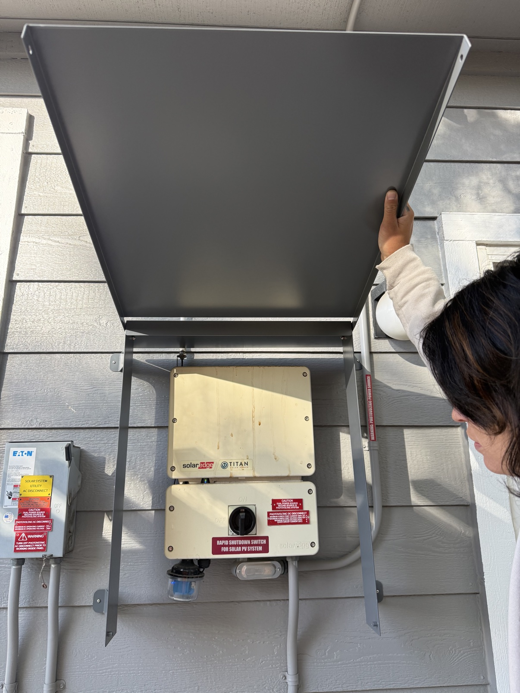
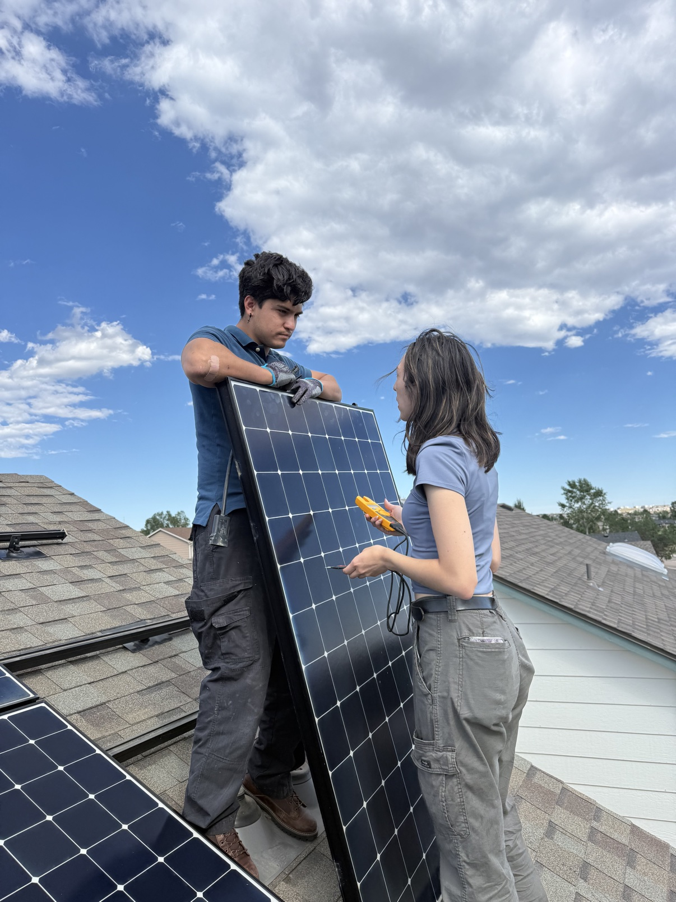

SunPower Monitoring Rescue
Your SunPower App Went Dark. Your Panels Probably Didn't.
SunPower went bankrupt, its support lines went quiet, and for a lot of Colorado homeowners the monitoring simply stopped reporting — no production numbers, no alerts, no idea whether the system on the roof is even working. Mile High Solar Care rescues orphaned SunPower systems: our $149 Maintenance Check includes a monitoring health audit, and we'll walk you through exactly what it takes to see your production again.
Here's what happened, in plain terms. SunPower — once one of the biggest names in residential solar — filed for bankruptcy in 2024 and effectively disappeared. Its dealer network vanished, its support channels went dark, and the monitoring platform behind the mySunPower app changed hands. Some owners kept their app and lost their installer. Others lost the app entirely: no login, no production history, no alerts — just a quiet system on the roof and a higher electric bill they can't explain.
If that's you, you have what we call an orphaned solar system — and orphaned systems are the reason Mile High Solar Care exists. We started by keeping a friend's abandoned system running after their installer, Titan Solar, went bankrupt. Rescuing systems nobody else will touch is not a side offering for us. It's the founding story.
First, the good news: a dark app rarely means dead panels
Monitoring is the messenger, not the system. In most cases we see, the panels and inverter are still producing — it's the communication path that broke: a gateway that lost its connection, a Wi-Fi change nobody told the system about, an account stranded under a defunct installer's name, or an app login that died with the company. The expensive mistake is assuming the worst — or worse, assuming everything is fine while a real fault quietly costs you production month after month.
The only way to know which one you have is to look. That's what the audit is for. (We recently decoded the most common monitoring alerts — and what they're actually telling you — in Your Solar App Is Trying to Tell You Something.)

What the $149 Maintenance Check includes: a monitoring health audit
Our Maintenance Check was built for exactly this situation. For a flat $149, we come to your home and:
- Review everything your monitoring still shows — production information and alerts in your homeowner-accessible monitoring — and document what the system is and isn't reporting.
- Check the communication path — the monitoring gateway and its status indicators, its connection to your home network, and whether the account is registered to you or stranded under SunPower or a defunct dealer.
- Photograph the array and roofline and note visible maintenance concerns, so you leave with a dated record of your system's condition.
- Give you findings in plain language — what we found, what it means, and the exact next step if one is needed. No jargon, no pressure.
One honest boundary, stated up front: the Maintenance Check documents what we observe. It does not certify output and does not include electrical diagnostics — those are a separate visit, described below, and only if your system actually needs one.
The restoration path: how you get your production back
Most SunPower rescues follow the same four steps:
- Audit. The $149 Maintenance Check above — we establish what your system is doing, what it's reporting, and where the communication broke.
- Reconnect. Gateway and Wi-Fi reconnection, monitoring reconfiguration, and help recovering or transferring account access into your name where the platform allows it. This is configuration and access work — squarely our lane, and it's where most dark apps come back to life.
- Verify. We confirm your production is reporting again and show you how to read it — what normal looks like for your system, and which alerts are worth a phone call.
- Escalate only if it's electrical. If the audit points to a hardware fault — an inverter error, a string down, a failed component — that's electrical work. It starts with a $295 Electrical Diagnostic performed by our licensed electrical contractor partner, with a written report of findings. Any repair is quoted separately and approved by you before anything begins. Our own team includes a NABCEP PV Associate–credentialed solar technician, and we'll coordinate the whole thing so you're never left managing two companies.
What it costs — all of it, up front
- Maintenance Check with monitoring health audit — $149. The rescue entry point. Flat price, no trip fees, no surprises.
- Inspection & Report — $245. If you want the full documented picture — photos, written report, itemized findings — for a home sale, an insurance file, or your own records.
- Electrical Diagnostic — $295, performed by our licensed electrical contractor partner, only when a finding actually calls for it.
- Panel cleaning — $129 up to 12 panels · $179 for 13–24 · $249 for 25–40 (+$50 two-story). Orphaned systems often haven't been cleaned since the installer left, and dirty panels quietly cost production.
- Solar Care Plans — from $27/month. Scheduled cleanings, an annual inspection, and remote production reviews — so your monitoring gets watched by someone who'll actually call you when it goes quiet again.
Anything beyond that is quoted in writing and approved by you before work begins. That's the whole pricing philosophy: published prices, itemized quotes, no work you didn't say yes to.
What we don't do — said plainly
We don't install new solar systems, and we don't perform electrical work ourselves — electrical service belongs to licensed electrical contractors, and we work with one we trust. What we do is everything around it: monitoring rescue, documented inspections, cleaning, critter guards, and honest coordination. If your SunPower system needs something outside our lanes, we'll document what we found, explain it clearly, and put you with the right licensed trade.
Serving SunPower orphans across the Front Range
Mile High Solar Care is a husband-and-wife company based in Aurora, serving Denver, Aurora, and the Colorado Front Range — including the neighborhoods full of SunPower systems installed during the boom years. We hold 5.0 stars across 42 Google reviews, and orphaned systems — Enphase ownership transfers, abandoned Titan systems, and now SunPower rescues — are our everyday work, not an experiment.
Your system doesn't care that SunPower closed. It can still produce for years. It just needs somebody who answers the phone — and who can get its voice back.
Related solar services
Questions SunPower owners actually ask
SunPower went bankrupt. Is my system still under warranty?
It's complicated, and anyone who gives you a one-word answer is guessing. SunPower's bankruptcy changed who — if anyone — stands behind its warranties, and the answer depends on which equipment you have and when it was installed. We can't make warranty determinations for a manufacturer, but we can document your system's condition thoroughly, which is where any claim starts.
My app shows no production. Are my panels broken?
Usually not. A dark app most often means the monitoring lost its connection — a gateway offline, a Wi-Fi change, or an account stranded under SunPower or a closed dealer. Your panels may be producing fine and reporting nothing. The $149 audit separates "the app lost contact" from "the system has a real problem."
Can you actually get my monitoring working again?
In most cases, yes. Reconnection, reconfiguration, and account-access recovery are configuration work — our lane — and it's where most dark apps come back. If the audit shows the monitoring hardware itself has failed electrically, that becomes a $295 Electrical Diagnostic with our licensed electrical contractor partner, and we'll tell you that plainly before you spend it.
What exactly does the $149 Maintenance Check include?
A monitoring health audit — we review your production information and alerts and check the gateway's connection and account status — plus photos of your array and roofline, notes on visible maintenance concerns, and plain-language findings with a dated record for your files. It documents what we observe; it doesn't certify output or include electrical testing.
Do you only fix monitoring, or can you care for the whole system?
The whole system. Cleaning, documented inspections, critter guards with a lifetime workmanship guarantee, and ongoing care plans are all our everyday work — monitoring rescue is just where SunPower orphans usually start. Electrical work is performed by our licensed electrical contractor partner, coordinated by us.
I bought a home with SunPower panels. Can you help me?
Yes — this is one of the most common calls we get. We'll document what you actually have, help get the monitoring account transferred into your name where the platform allows, and give you a clear picture of the system's condition and what it should be producing.